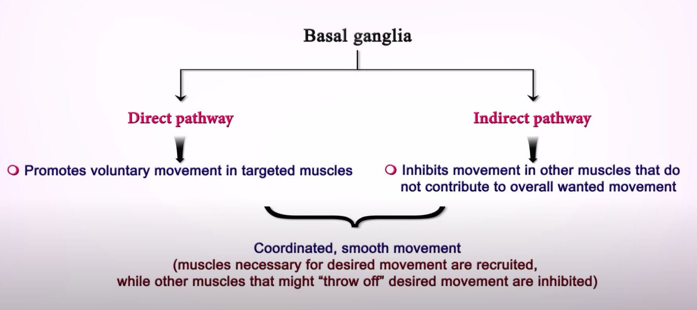
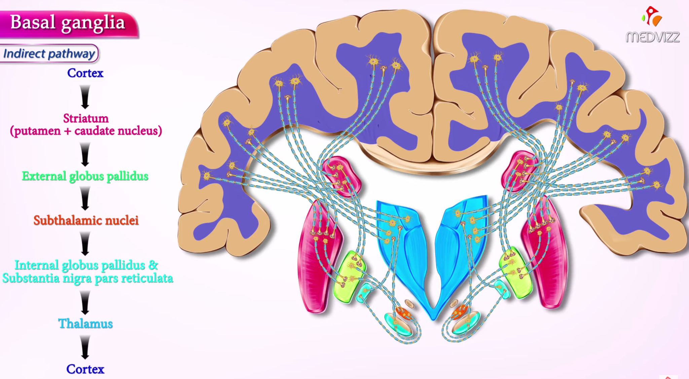
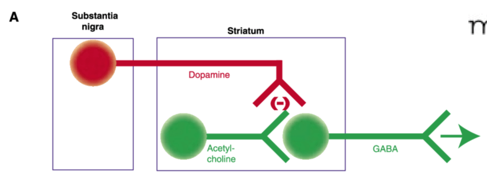

24 추체외로 증후군
24.1 추체외로 부작용
24.1.1 역사와 임상적 의의
1950년대 후반이 되자 대형 정신병원에 근무하던 의사들은 진단을 불문하고 수용되어 있던 환자들에게 앞다투어 클로르프로마진을 투여하기 시작하였다. 하지만 놀라운 효과에 감탄한 동시에 새로운 약물이 환자들에게 어떤 영향을 미치는지에 대한 우려도 높아졌다. 정신약물학자라기 보다는 정신분석가에 가까왔던 Steck1과 Haase2는 이 약물을 쓴 환자들이 행동이 느리고, 팔을 흔들지 않고 걸으며, 근육이 경직되고 무표정한 얼굴에 감정 반응도 둔화된다는 것을 관찰하였다.[1,2] (6-2-4절) 이러한 양상은 파킨슨병 환자와 매우 흡사하였기 때문에 추체외로 증상(extrapyramidal symptoms), 가성 파킨슨증(pseudoparkinsonism)3, 혹은 약물유발 파킨슨증(drug-induced parkinsonism) 등으로 불리게 되었다.
1 Hans Steck (1891-1980): 스위스의 정신과 의사. Lausanne 대학에서 교수로 재임하였으며, 부설 Cery 수용소의 원장을 역임하였다. 조현병 환자의 예술 표현에 관심이 많았으며, 당대 유명 화가인 Jean Dubuffet의 “art brut (outsider art)” 운동의 영향을 받아 자신이 돌보던 조현병 환자인 Aloïse Corbaz (1986~1964)를 유명 화가로 발굴하였다.
2 Hans-Joachim Haase (1922~1997): 독일의 정신과 의사이자 정신분석가. 추체외로 증상을 일으킬 정도의 용량을 써야, 항정신병 약물의 치료 효과를 최대로 얻을 수 있다는 “neuroleptic threshold”이론을 제안하였다.
3 Pseudoparkinsonism: 항정신병 약물에 의한 추체외로 증상을 지칭하는 용어로 도입되었으나, 이내 다양한 약물에 의해서, 혹은 치매나 뇌졸중에 의해서 발생하는 유사 증상을 폭넓게 지칭하게 되었다. 현재는 정작 파킨슨병(Parkinson disease)은 아니면서 유사한 증상을 나타내는 모든 상태를 의미하며, 점차 파킨슨증(parkinsonism) 혹은 이차성 파킨슨증(secondary parkinsonism)이라는 용어로 대체되고 있다.[3]
두 사람은 이를 부작용으로 이해하기 보다는 조현병 병리 현상의 일부 혹은 항정신병 약물 치료 효과의 일부라고 생각하였고, Haase는 neuroleptic threshold (NT)4 라는 개념을 내놓기도 하였다. 물론 NT를 훨씬 넘어서는 용량은 불필요하며, 환자에게 불필요한 고통을 지운다는 데는 의사들의 의견이 일치하였지만, 적어도 NT를 약간 넘는 수준의 용량을 투여해야 한다는 이론은 오랫동안 임상 관행을 좌우하였다.5
4 Neuroleptic threshold: Haase가 이끄는 연구팀은 환자들의 손글씨를 검토하였다.(Handwriting test) 손글씨는 미세한 운동조정 기능을 반영한다는 가정하에, 손글씨의 손상이 일어난 환자들과 그렇지 않은 환자들의 치료 반응을 조사하였고, 후자가 훨씬 반응이 좋다는 것을 확인하였다. Haase 등은 이러한 미세 운동 장애를 일으키는 항정신병 약물의 용량을 neuroleptic threshold라고 불렀고, 적어도 이를 넘어서야 약물 반응을 기대할 수 있다고 하였다.[4]
5 1991년에 발표된 McEvoy 등[5]의 논문에서도, 경한 추체외로 증상을 일으키는 용량, 즉 neuroleptic threshold 용량을 최소 유효 용량을 삼고 있다.
이러한 관행은 1964년 미국 국립정신보건연구원(NIMH)의 후원으로 진행된 연구에서, 추체외로 부작용의 정도와 치료 효과 사이에는 별다른 상관관계가 없다는 것이 확인되면서[6], 조금씩 옅어지기 시작하였다. 이후 조현병 환자의 삶의 질, 사회적/직업적 기능 회복, 주관적 경험과 순응도 등에 대한 연구가 활발해지면서, 추체외로 부작용은 그야말로 아무도 원하지 않는 약물유해작용이 되어버렸다. 1980년대 말 클로자핀이 미국에 도입되었고, 이후 봇물 터지듯 비정형 항정신병 약물들이 차례로 도입되면서, 운동 부작용을 최소화하면서도 치료 효과를 낼 수 있다는 자신감이 생겼다. 21세기에 FDA의 승인을 받은 좀더 새로운 약물들은 거의 추체외로 부작용일 일으키지 않는다.
문헌에서는 추체외로 증상(extrapyramidal symptoms), 추체외로 부작용(extrapyramidal side effects), 약물유발 파킨슨증 등의 용어가 혼재되어 사용되고 있지만, DSM-5나 ICD-10에서는 약물유발 운동장애 (drug-induced movement disorders, DIMD)로 용어를 통일하고 있으며, “추체외로” 이외의 운동장애들도 포괄한다. 엄밀하게 말하여 약물유발 운동장애 중 하나인 파킨슨증(아래 참조)은 추체외로 부작용이 맞지만, 근긴장이나 좌불안석은 추체외로 이외의 다른 경로도 관여한다.
운동 부작용은 심한 기능 장애를 유발하며, 삶의 질과 약물 순응도에 부정적인 영향을 미친다. 환자 중에서는 운동 부작용을 잘 인식하지 못하는 경우도 있지만, 대다수 환자들은 불쾌하고 고통스러운 정신적 증상을 동반한다. 이러한 정신 증상이 운동 부작용에 대한 “정상적인” 심리반응인지, 또 다른 약물 부작용인지는 잘 감별되지 않는다.
실제로 운동 부작용과 이에 동반된 정신 증상은, 조현병 자체의 증상과 유사하여 평가에 혼란을 가져온다. 예를들어 서동증이나 무표정은 음성/우울 증상과 구분하기 어려우며, 좌불안석은 불안/초조 증상으로 오진되기 쉽다.
24.2 다양한 약물유발 운동장애
약물유발 운동장애는 다시 1) 약물유발 파킨슨증과, 2) 근긴장증, 그리고 3) 좌불안석(정좌불능증)으로 구분된다. 항정신병 약물 투여 후 수 주 내에 발생하여 저절로 소실되는 급성 부작용이 더 흔하지만, 장기 치료 과정에서 지연성 근긴장증 및 만성 좌불안석으로 오랫동안 고통받을 수도도 있다.
24.2.1 약물유발 파킨슨증
약물 투여를 시작하거나 증량한지 수일에서 수주 내에 발생하며, 안정시 진전(resting tremor), 근육 경직(rigidity), 운동불능증(ataxia) 또는 서동증(bradykinesia)이 주로 나타난다. 아마도 흑질-선조체 경로의 D2 수용체 차단때문이라고 여겨진다. 그러나 수용체 차단은 투여 후 몇 시간이면 시작되지만, 근긴장증이나 좌불안석과는 달리 파킨슨 증상이 처음 나타나려면 며칠 이상 기다려야 하기 때문에, D2 차단이 운동 중추에 영향을 주기까지 복잡한 과정을 거쳐야 하는 것으로 보인다. 아마도 최종적인 이상은, 시상-피질 회로(thalamo-cortical circuit)를 통한 되먹임 과정에 있는 것으로 추정된다.(22523509)
24.2.1.1 발생기전
대뇌 피질에서 특정한 운동을 개시하겠다고 결정하면 저장된 운동 프로그램을 기저핵으로 보내, 구체적으로 어떤 근육을 어떻게 움직일 것인지 실행 계획(action plan)을 만들어낸다. 기저핵을 통해 만들어진 실행 계획은 시상-피질 회로를 거쳐 대뇌로 되돌려지며, 그제서야 비로서 피질 척수 경로(corticospinal tract)를 통해 실제로 어떤 근육을 수축시키고, 어떤 근육은 억제할 지 운동 신호가 내려간다.[7]


실행 계획을 만들어내는 기저핵의 회로는 1) 직접 경로(direct pathway)와 2) 간접 경로(indirect pathway)로 나누어진다. 직접 경로는 양성 되먹임의 원칙 하에 움직여야 하는 근육을 제대로 움직일 수 있도록 촉진하는 역할을 하며, 간접 경로는 음성 되먹임의 원칙 하에 불필요하거나 목적한 바에 어긋나는 근육의 움직임을 억압하는 역할을 한다. 한편 흑질로부터 유입되는 도파민 신호는 이 두 회로에 모두 영향을 주는데, 1) 직접 경로에서는 D1 수용체를 통해 GABA 분비 뉴런을 자극하며, 2) 간접 경로에서는 D2 수용체를 통해 GABA 분비 뉴런을 억제한다. 이는 결과적으로 직접 경로는 자극하고, 간접 경로는 억제하는 효과는 낳게 된다. 항정신병 약물은 D2를 차단하기 때문에 주로 간접 경로를 통해 추체외로 증상을 유발하게 된다. D2 차단으로 간접 경로가 억제되지 못하면, 음성 되먹임이 너무 강해져서 실행 계획이 제대로 대뇌에 되돌려지지 못하기 때문에 운동을 신속히 시작할 수 없다. 그 뿐 아니라 원하는 운동을 하는데 필요한 근육마저 억제하는 실행 계획이 되돌려지기 때문에 운동실조증이 생긴다. 반대로 도파민 활성이 과다해지면, 간접 경로가 제대로 작용하지 못하여 불필요한 근육의 수축을 막지 못하기 때문에 불수의적인 이상운동이 원하는 행동을 방해한다.
흑질의 도파민 신호는 GABA 분비 뉴런에 연접하지만, 동시에 아세틸콜린 분비 사이뉴런에도 연접한다. 아래 그림에서처럼 정상 상황에서 D2는 아세틸콜린 뉴런을 억제하는데, D2가 차단되면 아세틸콜린 활성이 통제가 안 되면서 간접 경로가 지나치게 활성화된다. 이는 D2 차단에 의해 GABA 뉴런이 억제되지 않는 상황을 더욱 악화시킨다. 따라서 이런 경우 항콜린성 약물을 쓰면 간접 경로가 지나치게 자극받는 것을 어느 정도는 막을 수 있다.

24.2.1.2 임상양상
파킨슨증의 빈도는 환자의 특성이나 진단, 사용한 약물에 따라 큰 폭으로 차이가 나지만, 모든 종류의 항정신병 약물을 투여하는 환자의 약 20%에서 발생하는 것으로 추정된다.[8] 이는 좌불안석(11%)이나 근긴장증에 비해 확연히 높은 빈도이다. 분명히 항정신병 약물의 용량과 상관이 있지만, 감수성의 개인차가 심하기 때문에 용량을 통해 발생 여부를 예측하기는 어렵다. 파킨슨증이 호발하는 위험 요소로는 고령, 처음 투여받는 청소년, 과거 중추신경계 질환 병력, 알코올이나 물질 남용, 간질, 과거 추체외로 부작용의 병력 등이 거론된다.[9,10]
약물유발 파킨슨증은 (특발성) 파킨슨병6과 비슷한 임상 양상을 보인다. 객관적인 운동 이상이 관찰되기 전이라도 환자들은 “입술과 혀가 굳었다”, “발음이 새서 말이 똑바로 나오지 않는다”, “침이 옆으로 질질 흐른다”, “몸이 뻣뻣해졌다”, “팔 다리가 마음대로 움직이지 않는다”는 식으로 호소한다. 증상을 적극적으로 호소하지 않는 환자라도, 가만히 있을 때 입주변이나 손에 떨림이 관찰되며, 보행시 팔을 자연스럽게 흔들지 못하고, 자세를 바꾸거나 행동을 시작할 때 머뭇거리는 증상을 보인다. 때로는 고개를 흔들거나, 몸통을 앞뒤로 흔드는 증상, 입맛을 다시는 행동7, 잦은 눈깜빡임 등을 보이기도 한다. 발생 시간을 따져보면, 약물을 처음 사용하고 가장 먼저 나타나는 것이 근긴장증이며, 그 다음이 좌불안석, 마지막으로 나타나는 것이 파킨슨증으로, 약물 투여 시작 후 5~30일 내에 가장 흔하다. 이를 급성 파킨슨증이라고 하는데, 수개월이 지난 후에도 지속되는 경우는 만성 파킨슨증이라고 한다.
6 파킨슨병 (Parkinson disease)과 파킨슨증 (Parkinsonism): 파킨슨병은 알 수 없는 이유로 흑질의 도파민 분비세포가 죽어나가면서, 수년간에 걸쳐 점차 운동 조절 기능을 상실해가는 만성 질환이다. 이에 비해 파킨슨증(parkinsonism)은 파킨슨병과 비슷하게 진전, 경직, 서동증을 유발하는 다양한 질환들을 한데 모아 일컫는 말이다. 파킨슨증을 atypical Parkinson’s disease, Parkinson’s plus 등으로 부르기도 한다. 약물유발 파킨슨증은 그중 대표적인 상태이며, 그밖에도 vascular parkinsonism, progressive supranuclear palsy, multiple system atrophy, dementia with Lewy bodies, corticobasal degeneration 등이 포함된다.
7 입술 주변 근육의 규칙적인 진전을 rabbit syndrome이라고 한다.[11]
파킨슨병과 비교해서 약물유발 파킨슨증에서는 안정시 진전이 상대적으로 드물며, 운동불능/서동증이 더 빈번하게 나타난다. 파킨슨병은 대개 어느 한쪽 반신에 두드러지며, 서서히 진행되는 점진적 경과를 보이며, 자율신경계 부조가 동반되는 경우가 많다. 파킨슨병의 확진을 위해서는 PET나 SPECT를 이용하여 도파민 수송체를 촬영하거나, 심장에 분포한 자율신경계 퇴화를 촬영하여 확인한다.8 실제 임상현장에서 강조되고 있지는 않지만, 중년 이상의 조현병 환자인데 약물을 아무리 조정해도 파킨슨 증상이 지속된다면 신경과에 의뢰하여 파킨슨병이 아닌지 확인할 필요가 있다. 그렇지 않다면 일단 약물을 교체하거나 끊어서 약물로 유발된 증상이 맞는지 확인해 볼 수 있는데, 문제는 원인 약물을 완전히 끊어도 최장 6개월까지도 증상이 지속될 수 있다는 것이다. 게다가 정신병적 증상때문에, 파킨슨증이 있음을 알면서도 약물을 끊기 어려울 때가 많다.
8 Cardiac 123I-MIBG scintigraphy
24.2.1.3 치료
치료를 위해서 가장 효과적인 것은 원인으로 의심되는 항정신병 약물의 용량을 줄이거나 다른 약으로 바꾸는 것이다. 그렇게 하기 어려울 때는 항콜린제를 비롯한 항파킨슨 약물을 사용한다. 항콜린제를 무작정 오래 쓰는 것은 삼가해야 한다. 파킨슨증이 저절로 좋아지는 경우가 있기 때문에 3개월에 한번 정도는 약물을 계속 써야할 지 고민해봐야 한다. 특히 노인에게서는 항콜린성 부작용의 위험이 더 크기 때문에 유의해야 한다. (구체적인 항콜린제 사용방법은 9-5절 참조)
24.2.2 근긴장증
근긴장증은 갑자기 순간적으로 왔다가 사라지는 경우와, 꽤 오래 지속되는 경우로 나눌 수 있다. 갑자기 올 때는 주로 머리와 목 주위 근육이 침범되며, 눈9 , 턱과 입10 을 포함한 근육이 강하게 수축하여 불편한 자세를 한동안 유지할 수 밖에 없다. 후두 근육이 영향을 받아 인후 경직(pharyngeal rigidity)이 일어나는 경우에는 구토, 연하 곤란, 호흡 곤란을 일으켜 응급 상황이 발생할 수도 있다.[12] 한편 근긴장증이 지속되는 경우에는 목, 몸통 또는 사지 근육이 계속 수축상태를 유지하여, 사경(torticollis), 배굴증(camptocormia), 흉곽경직(Pisa 증후군), 활모양강직(opisthotonus) 등으로 이어질 수 있다. 이런 증상들은 외견상으로는 강직증(catatonia)과 잘 구분되지 않지만, 환자가 몹시 고통스러워한다는 차이가 있다.
9 안구운동발작 (oculogyric crisis): 안구운동근육의 경직으로 눈이 위로 치켜떠지는 증상
10 개구장애 (trismus): 턱 근육이 경직되어 입이 벌어지지 않거나, 이를 꽉 악물게 되는 증상
근긴장이 생기는 이유는 파킨슨증보다도 이해가 불충분하다. 갑작스러운 D2 차단에 의한 간접 경로의 비정상적인 활성화가 원인일 것으로 추정되지만, 왜 근수축이 억압되지 않고 항진되는지는 의문이다. 그저 원하지 않는 운동 프로그램이, 기저핵의 조절 기전을 제대로 거치지 못하고 원시적인 형태 그대로 실행되는 것이라 추측될 뿐이다.[13]
근긴장증은 항정신병 약물을 처음 쓸 때 가장 많이 나타나지만, 용량이 증가하거나, 두번째 항정신병 약물이 추가되거나, 약물 상호작용을 일으키는 다른 약물이 추가되었을 때 생기기도 한다. 흥미롭게도 클로자핀을 갑자기 끊었을 때도 발생할 수 있다.[14] 약물 개시 후 가장 먼저 나타나는 부작용으로 95%의 경우에는 첫 5일 이내에 나타난다. 근긴장 증상은 몇 초 또는 몇 시간 지속되며, 길어도 24~48 시간내에는 저절로 좋아진다. 파킨슨증과는 달리 젊은 남성에 호발하며, 45세 이상의 환자에서는 드문 편이다.
문제는 근긴장이 자꾸 재발하거나, 잘 해소되지 않는 경우가 있다는 것이다. 안구운동발작(oculogyric crisis)은 특히 재발을 잘 하며, 안정적인 유지치료 시에도 종종 반복된다.[15] 그 외에 사경, Pisa 증후군 등도 수일에서 수년까지 지속될 수 있는데, 지속 기간이 길어지면 지연성 근긴장증(tardive dystonia)으로 분류한다.[16] 하지만 항콜린제를 쓰면 증상이 악화되는 지연성 운동이상증과는 달리 항콜린제에 여전히 반응한다.[13]
급성 근긴장이 생겼을 때는 항콜린제를 정맥 주사하는 것이 우선 권장된다. 그러나 우리나라처럼 주사제가 없는 경우에는 벤조디아제핀이나 디펜하이드라민을 정맥 주사한다. 일단 근긴장이 풀리면, 예방 차원에서 경구 항콜린제를 투여한다. 근긴장이 만성화되어 지연성 근긴장증이 의심될 때는 클로자핀으로 약을 바꿔야 할 수도 있다.
24.2.3 좌불안석
좌불안석 혹은 정좌불능증(akathisia)11은 끊임없이 움직이고 싶은 충동을 참을 수 없어서 가만히 있지 못하는 것을 의미하며, 환자는 이 기분을 떨치기 위해 몸통을 흔들거나 다리를 떨며, 자세를 끊임없이 바꾸고, 심하면 앉아있지 못하고 서성인다. 제 3자가 보았을때도 지나치게 움직임이 많아지는 것이 관찰되지만, 외적 변화없이 환자 혼자만 내면에서 초조함에 시달리기도 한다. 대부분 문헌에서는 항정신병 약물을 비롯한 약물유발 운동장애로 서술되지만, 항정신병 약물이 도입되기 훨씬 전인 20세기 초반에도 좌불안석에 대한 기술이 종종 보고되었다. 처음에는 심리적인 이유12때문으로 여겨지기도 하였으나, 뇌염 후 파킨슨병에서 자주 동반되는 것을 관찰한 후대 학자들은 뇌의 기질적 문제로 보기 시작하였다.[[17]]13 Ekbom은 유사한 현상인 하지불안 증후군(restless leg syndrome)을 기술하였고, 이를 Willis-Ekbom disease라 칭하였다.[19] 그러나 하지불안 증후군은 수면 장애인데 비하여, 좌불안석은 수면과는 아무런 상관이 없다.14 항정신병 약물 도입 이후 좌불안석에 대한 보고는 부쩍 많아졌으며, 클로르프로마진의 임상 시험을 수행한 Delay 역시 1957년에 좌불안석 사례를 보고하고 이를 “Le syndrome excitomoteur (excitomotor syndrome)”이라고 불렀다.
11 Akathisia는 그리스어로 “앉아있을 수 없는”이란 뜻이다. 1901년 체코슬로바키아의 정신과 의사인 Ladislav Hascovec가 처음 사용하였다.
12 히스테리 발작이나 전환 장애
13 신경학자인 Paul Robert Bing과 Jean-Athanase Sicard가 주로 이런 사례를 보고했기 때문에, 파킨슨병을 비롯한 기저핵 질환에서 동반되는 좌불안석을 Bing-Sicard akathisia라고 한다.[18]
14 좌불안석은 일중 변화나 수면 주기와 연관이 없고, 움직이거나 걸어도 근질근질한 느낌이 사라지지 않는다. 하지불안증후군은 저녁부터 시작되어 수면을 취하려고 할 때 가장 심하며, 움직이려는 충동이 하지에 집중되고, 움직이면 잠시 동안은 충동이 사라진다. 하지불안증후군 역시 일부 항우울제나 항정신병 약물에 의해 유발/악화될 수 있지만, 치료를 위해선 원인 약물을 제거하는 것만 갖고는 부족하며 ropinirole, pramipexole과 같은 도파민 효현제가 필요하다. 반면 좌불안석은 원인 약물을 제거하면 훨씬 호전되며, β-차단제나 벤조디아제핀이 효과적이다.
좌불안석은 1) 주관적으로 느껴지는 초조함과 움직이고 싶은 충동 그리고 2) 객관적으로 관찰되는 과다 행동으로 구성된다. 환자들은 불안과 초조를 심하게 호소하며, “근질거린다”, “피부 밑에 뭔가가 기어다닌다”, “뛰쳐나가고 싶다”는 식으로 표현한다. 외적으로 나타나는 행동은 특징적인 패턴을 보이는데, 반복적으로 자기 몸을 만지거나, 다리를 떨거나, 체중을 번갈아 양쪽 다리로 옮기거나, 다리를 꼬았다 풀었다를 반복한다. 또한 아예 일어나 제자리 걸음을 하거나, 일정 구간을 계속 왔다갔다 하기도 한다. 내적 고통이 매우 심하기 때문에, 자살 사고나 충동/공격적 행동으로 이어지기도하며, 약물 순응도를 떨어뜨리는 가장 중요한 요인 중 하나이다.
좌불안석이 왜 생기는 지는 여전히 오리무중이다. 일차적으로는 D2 차단이 원인일 것으로 생각되지만, 특징적 증상 양상이나 clonidine, propranolol이 효과적인 것으로보아, 아드레날린 과다활성이 중요한 역할을 하는 것으로 보인다.[20] 가장 유력한 가설에 따르면 도파민 저활성에 의해 보상적으로 활성이 증가한 아드레랄린 분비 뉴런은 측좌핵의 껍질 부분을 선택적으로 자극하는데, 여기서 불쾌감이 비롯되는 것으로 생각된다.[[21]]15
15 좌불안석의 병태생리는 쥐의 emotional defecation 모델을 이용하여 연구되었다. 평상시에는 도파민 분비 뉴런이 측좌핵의 핵(core)과 껍질(shell)을 균형있게 자극한다. 하지만 약물에 의해 도파민 활성이 줄어들면, 껍질에 주로 연접하는 아드레날린 분비 뉴런의 활성이 상대적으로 강해지면서 불균형이 생기고, 이러한 불균형이 불쾌감을 자아내는 것으로 믿어진다. 하지만 이는 어디까지나 쥐에 해당된 것으로 이 모델이 인간의 좌불안석에 들어맞는지도 의문이다.
급성 좌불안석은 약물 투여 후 수일에서 수주 내에 호발하며, 약물 용량을 조절하면 쉽게 사라진다. 그러나 의심을 하지 않으면 진단을 놓치기 쉽다. 급성 정신증을 앓고 있는 환자는 증상의 일부분으로 초조, 불안을 호소하며, 흥분이나 편집 사고 때문에 한군데 가만히 있지 못한다. 만성 병동에서는 혼자말을 중얼거리면서 복도를 계속 서성이는 환자를 보게 되는데, 좌불안석을 의심하지 못하면, 강직증에서 보이는 상동행동으로 치부하기 쉽다. 진단을 놓치면 결정적인 실수를 할 수도 있다. 내적 불편함을 망상의 일부분으로 편입하여 치료진과 다툼을 일으키는 경우에, 치료진은 오히려 항정신병 약물의 용량을 더 올리거나 주사제를 사용하기도 하는데, 이러면 증상이 더욱 악화된다. 진단에서 중요한 것은 외적 행동보다는 내적 경험이며, 좌불안석을 “운동 부작용”으로 보는 것보다는 “감각-운동 부작용”으로 보는 것이 더 합당하다.[22] 그만큼 좌불안석에는 특징적인 이상 감각이 존재하며, 과다 행동은 이 이상감각을 없애기 위한 노력일 뿐이다.
약물 용량이 안정화된 후에도 좌불안석이 계속되어 만성이 된 경우에는 겉으로 드러나는 행동은 표시가 잘 안나지만, 내적 초조함과 불편감만 계속되는 경우가 많다.[[23]]16 이와는 반대로 환자는 끊임없이 사부작거리는데, 정작 본인은 전혀 불편함을 못 느끼는 경우도 있다. 후자의 경우를 가성 좌불안석(pseudo-akathisia)이라고 칭하기도 한다.[24] 비록 “가성’이라는 이름이 붙었지만, 좌불안석의 정당한 한 형태로 인정되며, 지연성 운동이상증로 넘어가는 중간형태로 여겨진다.[18]
16 이를 주관적 좌불안석(subjective akathisia)이라고 표현하기도 한다.
만성 좌불안석과 지연성 좌불안석을 구분하기는 어렵다. 개념적으로는 급성 좌불안석이 호전되지 않고 오래 지속되는 것을 만성 좌불안석이라 하며, 반면 약물을 처음 사용했을 때는 나타나지 않다가 한참 후(적어도 3개월 후)에야 비로소 시작되는 것을 지연성 좌불안석(tardive akathisia)이라 한다. 하지만 좀더 포괄적인 지연성 운동이상증과 명확히 구분되지는 않는다. 흔하지는 않지만, 약물을 갑자기 끊었을 때도 심한 좌불안석이 나타날 수 있는데, 이를 금단 좌불안석(withdrawal akathisia)이라고 한다.
철분 결핍성 빈혈이 있을 때 하지불안증이 자주 나타난다는 관찰결과때문인지, 일부 연구자들은 빈혈과 좌불안석을 연결시키려고 시도해왔다.17 1987년 Brown 등[25]이 처음으로 좌불안석을 겪고 있는 환자에서 혈장 철 농도가 유의하게 떨어져있다고 보고한 후, 유사한 관찰결과가 뒤따랐다.[26,27] 심지어 좌불안석 환자에게 철분을 정맥 주사하였더니 증상이 좋아졌다는 보고도 있었다.[28] 그러나 이러한 접근법은 논란이 많으며, 좌불안석 환자에서 과연 철분 농도가 떨어져 있는지도 확실하지 않다.[29]
17 이는 아마도 하지불안증후군이 낮은 혈장 철 수치와 관련된다는 사실에서 유추한 듯 하다.
증상이 분명할 때 가장 먼저 시도해야할 것은 역시 원인이 되는 항정신병 약물의 용량을 줄이거나 교체를 시도하는 것이다. 그러나 좌불안석에 있어서만큼은 새로운 세대의 약물들이 반드시 유리한 것은 아니다. 새로운 세로토닌-도파민 길항제들18 이나, 3세대 항정신병 약물19도 은근히 좌불안석의 빈도가 높으며[30], 확실하게 위험이 낮은 것은 도파민 친화도가 낮고 항콜린 효과가 큰 클로자핀, 올란자핀, 퀘티아핀, 루마테퍼론 정도이다.[31]
18 일로페리돈, 아세나핀, 루라시돈
19 아리피프라졸, 브렉스피프라졸, 카리프라진
약물 치료를 시도할 경우, 가장 고전적이고 보편적인 전략은 β-차단제인 propranolol을 60~120mg/day 정도 사용하는 것이다. Propranolol은 α2 효현제인 clonidine과 함께 과도하게 활성화된 아드레날린 뉴런을 억제한다. Propranolol과 clonidine은 보통 벤조디아제핀과 함께 사용되며, 특히 급하게 증상을 가라앉혀야 할 때는 벤조디아제핀 주사제가 많이 활용된다. 경구 벤조디아제핀을 쓸 때는 클로나제팜과 로라제팜이 가장 많이 쓰인다. 이에 비해 항콜린제는 β-차단제나 벤조디아제핀만큼 효과가 없고, 만약 효과를 보려면 상당히 높은 용량을 써야 한다.[32] 이렇게 높은 용량을 쓰다보면 부작용이 늘어나기 때문에 위험/혜택 비에서 상당히 뒤로 밀린다.
급성 좌불안석은 어떤 치료법을 선택해도 반응이 좋은 편이지만, 만성 좌불안석은 상대적으로 치료가 잘 안 된다. 항정신병 약물의 용량을 줄일만큼 줄여도 환자가 여전히 힘들어할 때가 있다. 최근에는 급성 좌불안석을 비롯하여 만성인 경우에도, mirtazapine을 사용하는 것이 부쩍 자주 시도되고 있다. Mirtazapine은 5-HT2A/2C의 차단을 통해 좌불안석 증상을 경감시키며, 그 자체의 진정 효과가 강하기 때문에 주관적인 불안, 초조 증상을 해결하는데 도움이 된다.[33–35] 그 밖에 시도되는 약물로는 amantadine, gabapentin, vitamin B6 등이 있다.[36]
24.3 항콜린성 및 항파킨슨 약물
24.3.1 대표적인 항콜린성 약물
항정신병 약물로 인해 운동 부작용이 생겼을 때 간단히 시도할 수 있는 것은 항파킨슨 약물을 추가하는 것이다. 정형 약물 시대에는 항파킨슨 약물을 빈번히 사용해왔고, 심지어 운동 부작용이 나타나지 않았더라도 예방 차원에서 병용하는 것이 관행이었다.[37] 그러나 비정형 약물 시대가 열리면서, 항파킨슨 약물을 반드시 필요한 경우에만 국한하여 사용하는 것이 강조되고 있다.[38] 왜냐하면 이 약물들 자체가 말초 및 중추성 부작용을 일으킬 수 있으며, 인지 기능을 악화시켜 항정신병 약물의 음성/인지 증상 치료 효과를 상쇄시켜버리기 때문이다.
약물유발 운동부작용에 도파민 효현제를 사용할 수는 없기 때문에, 항파킨슨제로 사용되는 것은 대부분 항콜린성 약물이다. 유일한 예외라면 항히스타민제인 diphenhydramine이나 도파민 효현 작용을 지닌 amantadine20 정도이다. 벤즈트로핀과 트리헥시페니딜은 가장 많이 사용되는 항콜린성 약물이다. 벤즈트로핀은 구조적으로 atopine 및 diphenhydramine과 연관이 있는데, 후자의 성질을 띠기 때문에 상당히 졸린다. 보통 0.5~6mg/day 사이에서 사용한다. 트리헥시페니딜 역시 항콜린 효과를 보이나 벤즈트로핀보다 역가가 낮기 때문에 1~10mg/day 정도 사용한다.
20 Amantadine: 국내에서는 피케이멜즈(P.K.-Merz)라는 이름으로 판매되고 있다. 항파킨슨제이지만 인플루엔자 A 바이러스가 세포에 침입하는 것을 막기 때문에 2000년대 초까지만 해도 독감 치료제로 쓰였다.
항히스타민제인 diphenhydramine은 역시 강한 항콜린성 효과가 있어서, 추체외로 증상을 가라앉힌다. 신속히 흡수되고 작용 발현 시간이 빠르기 때문에, 급성 근긴장에 많이 사용된다. 이에 비해 항콜린 효과가 거의 없는 amantadine은 상당히 안전하다고 볼 수 있다. 효과도 벤즈트로핀/트리헥시페니딜에 비해 그리 떨어지지 않는다.[39,40] Amantadine은 중뇌-변연계보다 흑질-선초제의 도파민을 좀더 자극하기 때문에, 낮은 용량에서 정신증을 악화시키지는 않지만, 그렇다고 위험이 아주 없지는 않다. 이 때문에 벤즈트로핀/ 트리헥시페니딜에 효과가 없거나 안정성때문에 쓰지 못하는 환자에서만 대안으로 사용된다.[41]
| *정신증에서의 항파킨슨 약물 사용 | ||
|---|---|---|
| 형태 | 약물 | 특이적 사용 |
| 항콜린제 | 트리헥시페니딜 (Artane) | 추체외로증상 |
| 벤즈트로핀 (Cogentin) | ||
| 바이페리든 (Alcineton) | ||
| 프로사이클리딘 하이드로클로라이드(Kernadrin) | ||
| 항히스타민제 | 디펜하이드라민 (Benadryl) | 근긴장이상증 |
| 비항콜린성항파킨슨 약물 | 아만타딘 (P.K.-Merz) | 항콜린성 약제에 반응이 없거나 노인의 경우 |
| 베타블로커 | 프로프라놀롤, 베타소롤, 메토프로롤, 핀돌롤, 나돌롤 | 좌불안석 |
| 벤조다이아제핀 | 디아제팜, 로라제팜 | 좌불안석, 근긴장이상증 |
from [42]
24.3.2 사용 방법
24.3.2.1 일반적인 상황에서의 사용
약물유발 운동부작용이 발견되거나 의심되는 경우에는 기존 치료 약물의 용량을 조절하는 것이 먼저이다. 그게 여의치 않을 때만 항콜린제 사용을 고려한다. 벤즈트로핀을 쓸 때는 첫날 0.5mg로 시작하여 최대 6mg/day까지 증량한다. 낮은 용량에서는 취침전 한번 복용하며, 용량이 높아지면 하루 3~4회까지 나눠서 복용한다. 오래 지속된 추체외로 증상에는 주사제보다 반감기가 긴 경구제가 유리하다. 벤즈트로핀의 효과는 축적되기 때문에, 너무 급하게 증량하기보다는 효과가 나타날 때까지 적어도 3일 이상 기다려본다.
트리헥시페니딜은 벤즈트로핀보다 사용 용량이 높으며, 초회량인 1mg/day에서 시작하여 10mg/day 정도까지 증량한다. 벤즈트로핀보다 덜 졸리기 때문에 취침전보다는 식후 하루 세번 복용한다. 두 약물의 적응증이나 부작용, 금기는 거의 비슷하다. 현재 요저류, 전립선 비대증, 녹내장, 빈맥, 섬망 등이 있으면 사용해선 안된다. 한편 항콜린제는 발한을 막아 체온을 올리는 성질이 있기 때문에, 알코올 중독 환자나 야외 노동자, 격한 운동을 하는 사람에게는 조심해야 한다. 또한 안구건조를 유발하기 때문에 콘택트 렌즈를 착용하는 사람은 안경으로 바꿔야 한다.
항콜린제를 어느 정도나 오래 써야 하는 지에 대해선 지침이 없다. 항콜린제를 갑자기 끊으면 콜린성 반동 증상이나, 급격히 악화된 추체외로 증상이 나타날 수 있다. 하지만 서서히 줄이면 큰 무리없이 끊을 수 있다.[43] 최근에는 특별한 고민없이 마냥 유지하는 항콜린제로 인해 발생하는 인지부작용에 경각심이 커지고 있다.[44,45] 대부분 항정신병 약물 투여 초기에 항콜린제를 병용했다가, 항콜린제를 중단하면 운동부작용이 재발할까봐 두려워 끊지 못하고 있는 경우이다. 하지만 추체외로 증상은 자연히 소실되는 경우도 많다는 것을 염두에 두어야 한다.
또한 많은 의사들이 지연성 운동이상증에 대해서 아무런 치료를 하지 않는 것보다는, 항콜린제라도 쓰는게 맞다고 생각하는데, 이는 잘못된 생각이다.[46] 지연성 운동이상증에 항콜린제은 아무런 효과가 없으며, 항콜린제 자체가 지연성 운동이상증을 악화시키기도 한다.[47] 그나마 유일하게 지연성 운동이상증에 효과가 있다고 인정된 항파킨슨제는 아만타딘 뿐이다.[48]
24.3.2.2 급성 증상에서의 사용
항정신병 약물을 사용하는 중 갑자기 추체외로 증상이 생겼을 때는, 용량을 줄이는 것보다 먼저 항콜린제를 투여하는 것이 바람직하다. 특히 안구운동발작과 인후 경직을 비롯한 급성 근긴장증이나 급성 좌불안석이 생기면, 환자에게 끔찍하고 공포스러운 경험이 되므로 즉각 항콜린제를 사용해야 한다. 벤즈트로핀의 초회량은 0.5mg/day이지만 급성 근긴장의 경우 첫날부터 4~6mg/day 사용한다. 좀더 빠른 효과를 기대하려면 정맥 주사로 투여할 수도 있다. 트리헥실페니딜 역시 하루 3~4회 투여하며, 첫날이라도 증상에 따라 6~10mg/day까지 올릴 수 있다. 외국에서는 벤즈트로핀의 정맥주사를 가장 많이 사용하지만, 우리나라에는 주사제가 없기 때문에 경구 항콜린제와 함께 벤조디아제핀 정맥주사를 사용하는 경우가 더 많다.
24.3.2.3 예방 목적으로 사용하는 경우
추체외로 증상을 사전에 예방하기 위해 항콜린제를 사용하는 것은 논란의 여지가 있다. 겉으로 잘 드러나지 않고 환자도 크게 불평하지 않는 경우 추체외로 증상을 놓치기 쉽다. 이렇게 애매한 상황에서 항콜린제를 사용하면 환자가 훨씬 편안해하고, 그제서야 추체외로 증상이 있었음을 확인하기도 한다. 그러나 항콜린제 자체가 지닌 부작용때문에,고역가 약물을 고용량으로 사용할 때, 근육 주사를 반복해서 사용할 때, 과거 추체외로 부작용으로 힘들어 했을 때와 같은 특별한 경우에만 예방 목적으로 사용한다. 또한 예방 목적으로 사용했다면 적어도 3개월 내에는 끊는 것을 고려한다.
초발 정신증 환자는 재발 경험이 있는 환자보다 부작용 면에 있어서 더 민감하게 반응하며, 치료 초기에 급성 근긴장이 나타나는 빈도도 높다. 더군다나 처음 치료를 받는 젊은 환자들이 심한 추체외로 증상을 겪고 나면, 이후 약물 치료에 대해 내내 부정적인 선입견을 갖게 될 수 있다. 이런 경우 항정신병 약물과 병행하여 예방적 목적으로 항콜린성 약물을 써볼 수 있다.[44] 그러나 이 경우에도 장기 투여가 바람직하지 않은 것은 마찬가지이다.
24.3.2.4 장기 지속형 주사제 사용 시의 항콜린제 사용
장기 지속형 주사제는 나름의 장점이 많지만, 부작용에서 자유로운 것은 아니다. 게다가 용량 선택의 폭이 좁고, 일단 주사를 하고 나면 혈중 농도를 낮추기 곤란하기 때문에, 부작용 관리가 쉽지 않다. 이런 경우에는 주사제 사용 초기에 항콜린제를 잠시 병용할 수 있다. 그러나 추체외로 증상이 아직 나타나지도 않았는데 예방적으로 사용하는 것은 권장되지 않는다.[44]
24.3.3 항콜린제 자체의 부작용
벤즈트로핀과 트리헥시페니질은 도파민 재흡수를 억제하므로, 낮은 용량에서는 진정 효과를 보이지만 용량이 높아지면 흥분 효과를 나타낸다. 특히 벤즈트로핀은 도파민을 통한 자극 효과와, 항콜린 작용을 통한 환각 유발 효과를 보이며, 트리헥시페니딜은 행복감을 느끼게 하고 무력증을 개선시킨다. 이 때문에 정상인 혹은 조현병 환자가 불법으로 남용하는 경우가 있다.[49]
항콜린제는 비교적 낮은 용량에서도 다양한 말초성 항콜린 부작용을 일으킨다. 여기에는 입마름, 변비, 시력 저하, 안압 상승, 요저류, 장폐색, 빈맥 등이 포함된다. 따라서 항콜린 효과가 강한 항정신병 약물과 함께 쓰게 되면 더욱 부작용이 심해진다. 입마름이 심하면 지나치게 물을 마셔 물중독에 빠질 수 있으며, 만성 변비가 장폐색으로 악화될 수 있다. 용량이 더 높아지면 중추성 항콜린 부작용이 시작되는데, 기억력을 비롯하여 인지기능 손상과 뇌 실질 위축을 일으킬 수 있다.[50] 더 심해지면 항콜린성 섬망이 발생하기도 한다.[51] 만약 항콜린제를 복용 중인 환자가 의식이 불분명해지고, 뜨겁고 건조한 피부와 점막; 확장된 동공, 심한 빈맥을 보이면 항콜린성 섬망을 의심한다. 항콜린성 섬망의 증상이 그리 심하지 않으면 대증적 치료를 행하며, 벤조디아제핀으로 자극과민을 가라앉힌다. 심한 경우에는 콜린에스터라아제 억제제인 physostigmine을 0.03mg/kg의 용량으로 정맥 내에 투여한다.